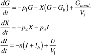
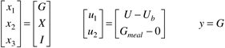
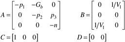
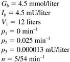
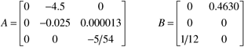
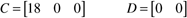
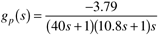
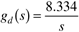
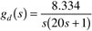
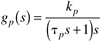

| [ Team LiB ] |
|
M12.4 Blood Glucose Control in Diabetic PatientsThe human body has many innate feedback-control loops. For example, blood glucose is regulated by the production of insulin by the pancreas. When food is consumed and broken down by the digestive system, the blood glucose level rises, stimulating insulin production. Cells use insulin to break down the glucose. People with diabetes have a reduced capability of producing insulin. Type I diabetes mellitus patients cannot produce any insulin and must administer insulin shots several times a day to help regulate their blood glucose level. A typical patient is then serving as a control system. Some actions are feedforward in nature, such as the administration of an insulin shot to coincide with meal consumption. Other actions are feedback in nature, such as when the patient changes dosages based on blood glucose measurements, obtained from "finger pricks" and analysis of glucose strips. In the long-term, hyperglycemia (high blood sugar) can lead to blindness and cardiovascular problems. In the short-term, hypoglycemia (low blood sugar) can lead to fainting or a diabetic coma. Clearly, there is a tremendous motivation for the development of closed-loop insulin delivery systems. Current technology involves external pumps with insulin reservoirs that can deliver insulin continuously, rather than having "pulses" due to shots administered several times a day. With an external infusion pump, the patient must still perform tests to monitor blood glucose levels. There is a major research effort to develop implantable glucose sensors and insulin infusion pumps. An implanted sensor will measure glucose and send a telemetry signal to a small, wristwatch-sized controller that can send another telemetry signal to a small implanted insulin pump. This closed-loop system essentially acts as an artificial pancreas, yielding a lifestyle that differs little from a nondiabetic person on a day-to-day basis. Nonlinear ModelOne of the more widely used models of the effect of insulin infusion and glucose (meal) inputs on the blood glucose concentration is known as the Bergman "minimal model" (Bergman et al., 1981). This is described by three differential equations:  where G and I represent the deviation in blood glucose and insulin concentrations, respectively. Also, X is proportional to the insulin concentration in a "remote" compartment. The inputs are Gmeal, a meal disturbance input of glucose, and U, the manipulated insulin infusion rate. The parameters include p1, p2, p3, n, and V1 (which represents the blood volume). Other parameters are Gb and Ib, the "basal" (baseline or steady state) values of blood glucose and insulin concentration. These values can be used to determine the basal infusion rate of insulin necessary to maintain a steady state. Linear ModelA linear state space model can be developed for use in control-system design. Here, define the state, input, and output variables (in deviation form) as  where the first input is manipulated (insulin infusion) and the second input represents a meal glucose disturbance. The state space model is  Example Set of ParametersConsider a diabetic that is modeled using the following set of parameters (Lynch and Bequette, 2001):  It is necessary to be careful with units. Since the concentrations are in mmol/liter, and the glucose disturbance has units of grams, we must apply a conversion factor of 5.5556 mmol/g to the Gmeal term. Solving for the steady states, we find that the basal insulin infusion rate must be Ub = 16.667 mU/min. For these parameters, the resulting state space model is  In the United States it is more common to work with glucose concentration units of mg/deciliter rather than mmol/liter. Since the molecular weight of glucose is 180 g/mol, we must multiply the glucose state (mmol/liter) by 18 to obtain the measured glucose output (mg/deciliter). This yields the following state-output relationship  You should find that the process transfer function is  Due to pole/zero cancellation, the disturbance transfer function is  In practice, the glucose does not directly enter the blood stream. The processing in the gut before entering the blood can be modeled as a first-order transfer function with a 20-minute time constant. This means that the disturbance transfer function, including the lag in the gut, is  Also, unlike many chemical process disturbances, a meal disturbance is best modeled as a pulse. Assume that a 50 g glucose meal is consumed over a 15-minute period; the pulse then has a magnitude of 3.333 g/minute for a duration of 15 minutes. Desired Control PerformanceThe steady-state glucose concentration of 4.5 mmol/liter corresponds to a measured glucose concentration of 81 mg/deciliter. It is important that a diabetic maintain her/his blood glucose concentration above 70 mg/deciliter (to avoid short-term problems with hypoglycemia, such as fainting). Notice that the insulin infusion rate (manipulated input) cannot go below 0; it is critical that you consider this constraint in your simulations. A number of control strategies could be used. One suggestion is to simplify the process transfer function (M12.10) to the following form  and design an IMC-based PD or PID controller. Also, since the diabetic knows when they are consuming a meal, some type of feed-forward action can be used. Perform disturbance rejection simulations and discuss your results. What feedback-only design (and tuning) do you recommend? What are the minimum and maximum blood glucose values that occur after a pulse meal consumption of 50 g glucose over a 15-minute period? Does your strategy satisfy constraints on the insulin infusion rate? How much better is the performance if feed-forward control is included? Compare the resulting blood glucose profiles with those found in the literature. |
| [ Team LiB ] |
|